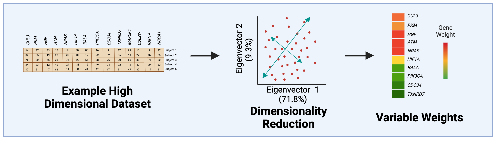
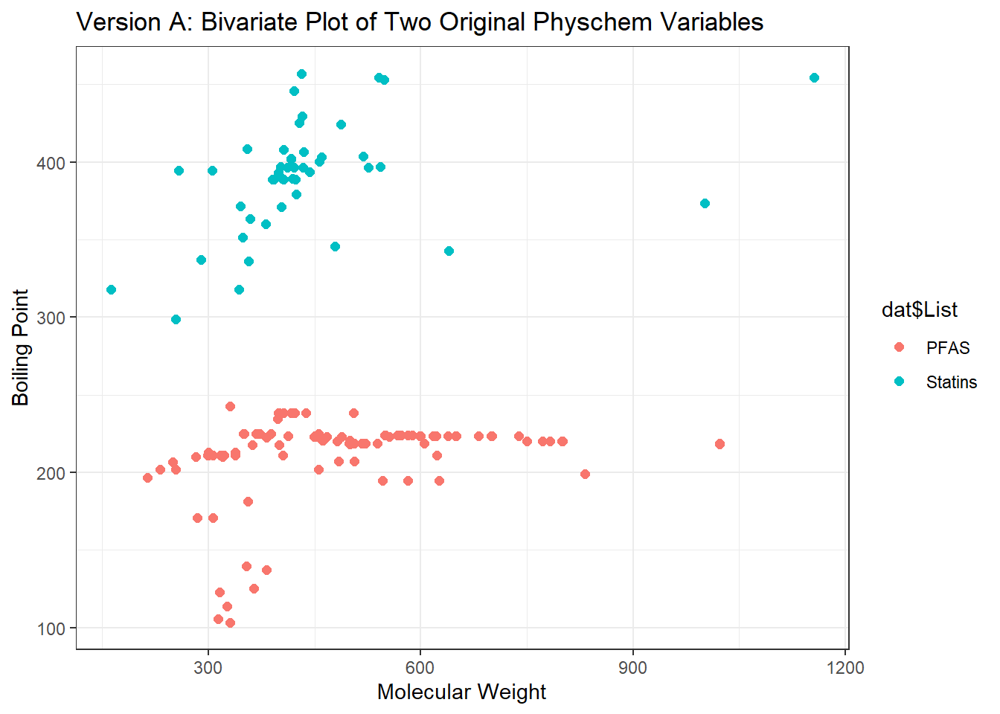
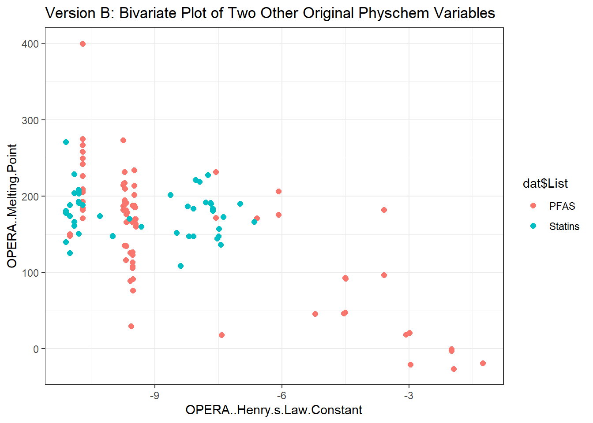
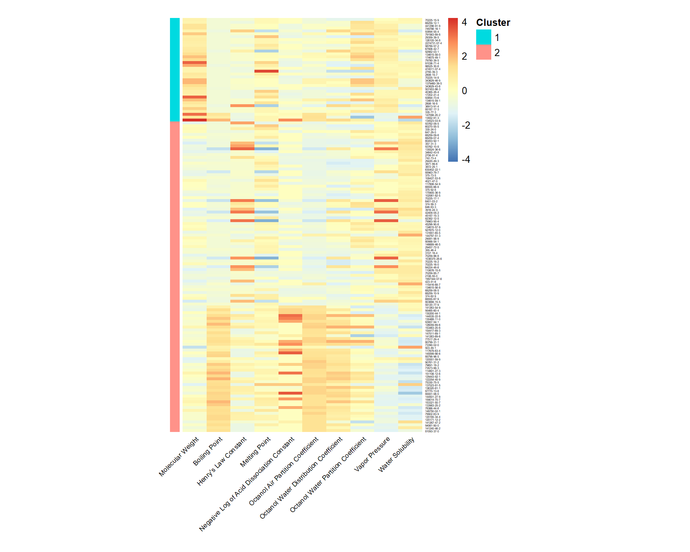
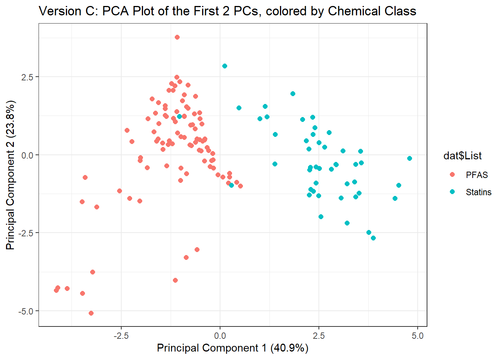
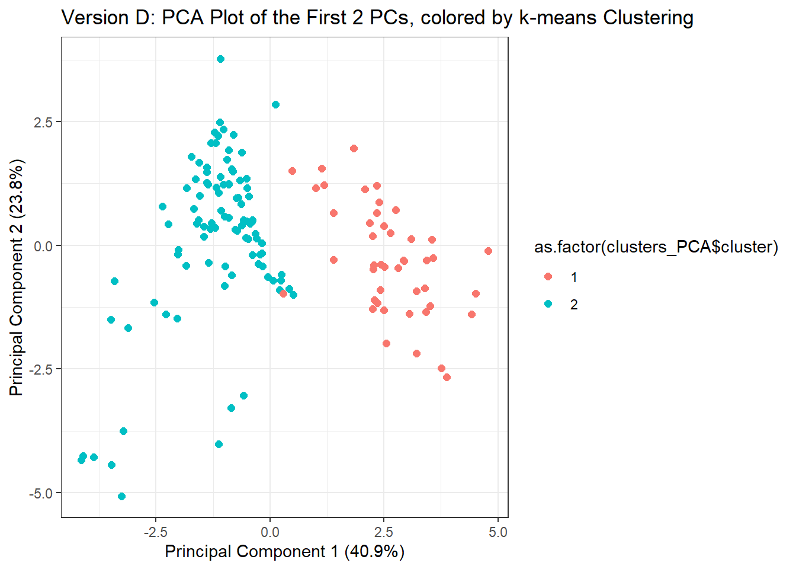

5.4 Unsupervised Machine Learning Part 1: K-Means Clustering & PCA
This training module was developed by David M. Reif with contributions from Alexis Payton, Lauren E. Koval, and Julia E. Rager.
All input files (script, data, and figures) can be downloaded from the UNC-SRP TAME2 GitHub website.
Introduction to Training Module
To reiterate what has been discussed in the previous module, machine learning is a field that has great utility in environmental health sciences, often to investigate high-dimensional datasets. The two main classifications of machine learning discussed throughout the TAME Toolkit are supervised and unsupervised machine learning, though additional classifications exist. Previously, we discussed artificial intelligence and supervised machine learning in TAME 2.0 Module 5.1 Introduction to Machine Learning & Artificial Intelligence, TAME 2.0 Module 5.2 Supervised Machine Learning, and TAME 2.0 Module 5.3 Supervised Machine Learning Model Interpretation. In this module, we’ll cover background information on unsupervised machine learning and then work through a scripted example of an unsupervised machine learning analysis.
Introduction to Unsupervised Machine Learning
Unsupervised machine learning, as opposed to supervised machine learning, involves training a model on a dataset lacking ground truths or response variables. In this regard, unsupervised approaches are often used to identify underlying patterns amongst data in a more unbiased manner. This can provide the analyst with insights into the data that may not otherwise be apparent. Unsupervised machine learning has been used for understanding differences in gene expression patterns of breast cancer patients (Jezequel et. al, 2015) and evaluating metabolomic signatures of patients with and without cystic fibrosis (Laguna et. al, 2015).
Note: Unsupervised machine learning is used for exploratory purposes, and just because it can find relationships between data points, that doesn’t necessarily mean that those relationships have merit, are indicative of causal relationships, or have direct biological implications. Rather, these methods can be used to find new patterns that can also inform future studies testing direct relationships.
Unsupervised machine learning includes:
- Clustering: Involves grouping elements in a dataset such that the elements in the same group are more similar to each other than to the elements in the other groups.
- Exclusive (K-means)
- Overlapping
- Hierarchical
- Probabilistic
- Dimensionality reduction: Focuses on taking high-dimensional data and transforming it into a lower-dimensional space that has fewer features while preserving important information inherent to the original dataset. This is useful because reducing the number of features makes the data easier to visualize while trying to maintain the initial integrity of the dataset.
- Principal Component Analysis (PCA)
- Singular Value Decomposition (SVD)
- t-Distributed Stochastic Neighbor Embedding (t-SNE)
- Uniform Manifold Approximation and Projection (UMAP)
- Partial Least Squares-Discriminant Analysis (PLS-DA)
In this module, we’ll focus on methods for K-means clustering and Principal Component Analysis described in more detail in the following sections. In the next module, TAME 2.0 Module 5.5 Unsupervised Machine Learning II: Hierarchical Clustering, we’ll focus on hierarchical clustering. For further information on types of unsupervised machine learning, check out Unsupervised Learning.
K-Means Clustering
K-means is a common clustering algorithm used to partition quantitative data. This algorithm works by first randomly selecting a pre-specified number of clusters, k, across the data space with each cluster having a data centroid. When using a standard Euclidean distance metric, the distance is calculated from an observation to each centroid, then the observation is assigned to the cluster of the closest centroid. After all observations have been assigned to one of the k clusters, the average of all observations in a cluster is calculated, and the centroid for the cluster is moved to the location of the mean. The process then repeats, with the distance computed between the observations and the updated centroids. Observations may be reassigned to the same cluster or moved to a different cluster if it is closer to another centroid. These iterations continue until there are no longer changes between cluster assignments for observations, resulting in the final cluster assignments that are then carried forward for analysis/interpretation.
Helpful resources on k-means clustering include the following: The Elements of Statistical Learning & Towards Data Science.
Principal Component Analysis (PCA)
Principal Component Analysis, or PCA, is a dimensionality-reduction technique used to transform high-dimensional data into a lower dimensional space while trying to preserve as much of the variability in the original data as possible. PCA has strong foundations in linear algebra, so background knowledge of eigenvalues and eigenvectors is extremely useful. Though the mathematics of PCA is beyond the scope of this module, a variety of more in-depth resources on PCA exist including this Towards Data Science Blog, and this Sartorius Blog. At a higher level, important concepts in PCA include:
PCA partitions variance in a dataset into linearly uncorrelated principal components (PCs), which are weighted combinations of the original features.
Each PC (starting from the first one) summarizes a decreasing percentage of variance.
Every instance (e.g. chemical) in the original dataset has a “weight” or score” on each PC.
Any combination of PCs can be compared to summarize relationships amongst the instances (e.g. chemicals), but typically it’s the first two eigenvectors that capture a majority of the variance. 
Introduction to Example Data
In this activity, we are going to analyze an example dataset of physicochemical property information for chemicals spanning per- and polyfluoroalkyl substances (PFAS) and statins. PFAS represent a ubiquitous and pervasive class of man-made industrial chemicals that are commonly used in food packaging, commercial household products such as Teflon, cleaning products, and flame retardants. PFAS are recognized as highly stable compounds that, upon entering the environment, can persist for many years and act as harmful sources of exposure. Statins represent a class of lipid-lowering compounds that are commonly used as pharmaceutical treatments for patients at risk of cardiovascular disease. Because of their common use amongst patients, statins can also end up in water and wastewater effluent, making them environmentally relevant as well.
This example analysis was designed to evaluate the chemical space of these diverse compounds and to illustrate the utility of unsupervised machine learning methods to differentiate chemical class and make associations between chemical groupings that can inform a variety of environmental and toxicological applications. The two types of machine learning methods that will be employed are k-means and PCA (as described in the introduction).
Training Module’s Environmental Health Questions
This training module was specifically developed to answer the following environmental health questions:
- Can we differentiate between PFAS and statin chemical classes when considering just the raw physicochemical property variables without applying unsupervised machine learning techniques?
- If substances are able to be clustered, what are some of the physicochemical properties that seem to be driving chemical clustering patterns derived through k-means?
- How do the data compare when physicochemical properties are reduced using PCA?
- Upon reducing the data through PCA, which physicochemical property contributes the most towards informing data variance captured in the primary principal component?
- If we did not have information telling us which chemical belonged to which class, could we use PCA and k-means to inform whether a chemical is more similar to a PFAS or a statin?
- What kinds of applications/endpoints can be better understood and/or predicted because of these derived chemical groupings?
Script Preparations
Installing required R packages
If you already have these packages installed, you can skip this step, or you can run the below code which checks installation status for you
Loading required R packages
Getting help with packages and functions
?tidyverse # Package documentation for tidyverse
?kmeans # Package documentation for kmeans (a part of the standard stats R package, automatically uploaded)
?prcomp # Package documentation for deriving principal components within a PCA (a part of the standard stats R package, automatically uploaded)
?pheatmap # Package documentation for pheatmapLoading the Example Dataset
Let’s start by loading the datasets needed for this training module. We are going to use a dataset of substances that have a diverse chemical space of PFAS and statin compounds. This list of chemicals will be uploaded alongside physicochemical property data. The chemical lists for ‘PFAS’ and ‘Statins’ were obtained from the EPA’s Computational Toxicology Dashboard Chemical Lists. The physicochemical properties were obtained by uploading these lists into the National Toxicology Program’s Integrated Chemical Environment (ICE).
Data Viewing
Starting with the overall dimensions:
## [1] 144 14Then looking at the first four rows and five columns of data:
## List Substance.Name CASRN
## 1 PFAS Perfluoro-2-(trifluoromethyl)propanesulphonic acid 93762-09-5
## 2 PFAS Potassium perfluoroheptanesulfonate 60270-55-5
## 3 PFAS Bis(2-hydroxyethyl)ammonium perfluoroheptanesulfonate 70225-15-9
## 4 PFAS Potassium perfluoro-p-ethylcyclohexanesulfonate 335-24-0
## DTXSID Molecular.Weight
## 1 DTXSID90239569 300.100
## 2 DTXSID9069392 488.212
## 3 DTXSID60880946 555.258
## 4 DTXSID50880117 500.223Note that the first column, List, designates the following two larger chemical classes:
## [1] "PFAS" "Statins"Let’s lastly view all of the column headers:
## [1] "List"
## [2] "Substance.Name"
## [3] "CASRN"
## [4] "DTXSID"
## [5] "Molecular.Weight"
## [6] "OPERA..Boiling.Point"
## [7] "OPERA..Henry.s.Law.Constant"
## [8] "OPERA..Melting.Point"
## [9] "OPERA..Negative.Log.of.Acid.Dissociation.Constant"
## [10] "OPERA..Octanol.Air.Partition.Coefficient"
## [11] "OPERA..Octanol.Water.Distribution.Coefficient"
## [12] "OPERA..Octanol.Water.Partition.Coefficient"
## [13] "OPERA..Vapor.Pressure"
## [14] "OPERA..Water.Solubility"In the data file, the first four columns represent chemical identifier information. All remaining columns represent different physicochemical properties derived from OPERA via Integrated Chemical Environment (ICE). Because the original titles of these physicochemical properties contained commas and spaces, R automatically converted these into periods. Hence, titles like OPERA..Boiling.Point.
For ease of downstream data analyses, let’s create a more focused dataframe option containing only one chemical identifier (CASRN) as row names and then just the physicochemical property columns.
# Creating a new dataframe that contains the physiocochemical properties
chemical_prop_df <- dat[,5:ncol(dat)]
rownames(chemical_prop_df) <- dat$CASRNNow explore this data subset:
## [1] 144 10## Molecular.Weight OPERA..Boiling.Point OPERA..Henry.s.Law.Constant
## 93762-09-5 300.100 213.095 -3.60
## 60270-55-5 488.212 223.097 -9.75
## 70225-15-9 555.258 223.097 -9.75
## 335-24-0 500.223 220.578 -7.56
## OPERA..Melting.Point
## 93762-09-5 96.455
## 60270-55-5 273.228
## 70225-15-9 182.152
## 335-24-0 231.827
## OPERA..Negative.Log.of.Acid.Dissociation.Constant
## 93762-09-5 0.175
## 60270-55-5 -1.810
## 70225-15-9 1.000
## 335-24-0 1.000## [1] "Molecular.Weight"
## [2] "OPERA..Boiling.Point"
## [3] "OPERA..Henry.s.Law.Constant"
## [4] "OPERA..Melting.Point"
## [5] "OPERA..Negative.Log.of.Acid.Dissociation.Constant"
## [6] "OPERA..Octanol.Air.Partition.Coefficient"
## [7] "OPERA..Octanol.Water.Distribution.Coefficient"
## [8] "OPERA..Octanol.Water.Partition.Coefficient"
## [9] "OPERA..Vapor.Pressure"
## [10] "OPERA..Water.Solubility"Evaluating the Original Physicochemical Properties across Substances
Let’s first plot two physicochemical properties to determine if and how substances group together without any fancy data reduction or other machine learning techniques. This will answer Environmental Health Question #1: Can we differentiate between PFAS and statin chemical classes when considering just the raw physicochemical property variables without applying unsupervised machine learning techniques?
Let’s put molecular weight (Molecular.Weight) as one axis and boiling point (OPERA..Boiling.Point) on the other. We’ll also color by the chemical classes using the List column from the original dataframe.
ggplot(chemical_prop_df[,1:2], aes(x = Molecular.Weight, y = OPERA..Boiling.Point, color = dat$List)) +
geom_point(size = 2) + theme_bw() +
ggtitle('Version A: Bivariate Plot of Two Original Physchem Variables') +
xlab("Molecular Weight") + ylab("Boiling Point")
Let’s plot two other physicochemical property variables, Henry’s Law constant (OPERA..Henry.s.Law.Constant) and melting point (OPERA..Melting.Point), to see if the same separation of chemical classes is apparent.
ggplot(chemical_prop_df[,3:4], aes(x = OPERA..Henry.s.Law.Constant, y = OPERA..Melting.Point,
color = dat$List)) +
geom_point(size = 2) + theme_bw() +
ggtitle('Version B: Bivariate Plot of Two Other Original Physchem Variables') +
xlab("OPERA..Henry.s.Law.Constant") + ylab("OPERA..Melting.Point")
Answer to Environmental Health Question 1
With these, we can answer Environmental Health Question #1: Can we differentiate between PFAS and statin chemical classes when considering just the raw physicochemical property variables without applying machine learning techniques?
Answer: Only in part. From the first plot, we can see that PFAS tend to have lower molecular weight ranges in comparison to the statins, though other property variables clearly overlap in ranges of values making the groupings not entirely clear.
Identifying Clusters of Chemicals through K-Means
Let’s turn our attention to Environmental Health Question #2: If substances are able to be clustered, what are some of the physicochemical properties that seem to be driving chemical clustering patterns derived through k-means? This will be done deriving clusters of chemicals based on ALL underlying physicochemical property data using k-means clustering.
For this example, let’s coerce the k-means algorithms to calculate 2 distinct clusters (based on their corresponding mean centered values). Here, we choose to derive two distinct clusters, because we are ultimately going to see if we can use this information to predict each chemical’s classification into two distinct chemical classes (i.e., PFAS vs statins). Note that we can derive more clusters using similar code depending on the question being addressed.
We can give a name to this variable to easily provide the number of clusters in the next lines of code, num.centers:
Here we derive chemical clusters using k-means:
clusters <- kmeans(chemical_prop_df, # input dataframe
centers = num.centers, # number of cluster centers to calculate
iter.max = 1000, # the maximum number of iterations allowed
nstart = 50) # the number of rows used as the random set for the initial centers (during the first iteration)The resulting property values that were derived as the final cluster centers can be pulled using:
## Molecular.Weight OPERA..Boiling.Point OPERA..Henry.s.Law.Constant
## 1 690.1443 233.0402 -9.589444
## 2 395.0716 281.4445 -8.655185
## OPERA..Melting.Point OPERA..Negative.Log.of.Acid.Dissociation.Constant
## 1 183.7980 0.01658333
## 2 157.5036 1.33226852
## OPERA..Octanol.Air.Partition.Coefficient
## 1 5.940861
## 2 6.629556
## OPERA..Octanol.Water.Distribution.Coefficient
## 1 -2.541750
## 2 -1.271315
## OPERA..Octanol.Water.Partition.Coefficient OPERA..Vapor.Pressure
## 1 4.000639 -5.538889
## 2 3.010302 -6.762009
## OPERA..Water.Solubility
## 1 -3.760222
## 2 -3.450750Let’s add the cluster assignments to the physicochemical data and create a new dataframe, which can then be used in a heatmap visualization to see how these physicochemical data distributions clustered according to k-means.
These cluster assignments can be pulled from the cluster list output, where chemicals are designated to each cluster with either a 1 or 2. You can view these using:
## 93762-09-5 60270-55-5 70225-15-9 335-24-0 647-29-0 68259-12-1
## 2 2 1 2 2 1
## 68259-09-6 68259-07-4 60453-92-1 357-31-3 441296-91-9 749786-16-1
## 2 2 2 2 1 1
## 93762-10-8 135524-36-6 93894-55-4 34642-43-8 2706-91-4 791563-89-8
## 2 2 1 2 2 1
## 742-73-4 29420-49-3 3871-99-6 29359-39-5 3872-25-1 126105-34-8
## 2 2 2 1 2 1
## 630402-22-1 2274731-07-4 98789-57-2 85963-79-7 375-73-5 108427-53-8
## 2 1 1 2 2 2
## 4021-47-0 117806-54-9 67906-42-7 68555-66-8 92982-03-1 375-92-8
## 2 2 1 2 1 2
## 175905-36-9 102061-82-5 134615-58-0 174675-49-1 79780-39-5 91036-71-4
## 2 2 1 1 1 1
## 70225-17-1 6401-03-2 374-58-3 646-83-3 86525-30-6 3916-24-3
## 2 2 2 2 1 2
## 42409-05-2 474511-07-4 2795-39-3 45187-15-3 82382-12-5 79963-95-4
## 2 1 1 2 2 2
## 45298-90-6 134615-57-9 927670-12-0 2806-15-7 70225-14-8 131651-65-5
## 2 2 2 1 1 2
## 343629-46-9 144797-51-3 29081-56-9 80988-54-1 1379460-39-5 343629-43-6
## 1 2 2 2 1 1
## 146689-46-5 29457-72-5 355-46-4 3107-18-4 70259-86-8 1036375-28-6
## 2 2 2 2 2 2
## 70225-18-2 70225-16-0 84224-48-6 507453-86-3 40365-28-4 110676-15-8
## 2 2 2 1 1 2
## 70259-85-7 2106-55-0 1997344-07-6 423-41-6 115416-68-7 17202-41-4
## 2 2 2 2 2 1
## 93894-73-6 134615-56-8 134615-59-1 68259-08-5 68259-10-9 374-62-9
## 1 2 1 2 2 2
## 68555-67-9 2806-16-8 36913-91-4 85187-17-3 803688-15-5 55120-77-9
## 2 1 1 1 2 2
## 335-77-3 141263-54-9 95465-60-4 130200-44-1 144535-22-8 130468-11-0
## 1 2 2 2 2 2
## 93957-54-1 126059-69-6 153463-20-8 154417-69-3 147511-69-1 141263-69-6
## 2 2 2 2 2 2
## 77517-29-4 80799-31-1 73390-02-0 503-49-1 117678-63-4 145599-86-6
## 2 2 2 2 2 2
## 147098-20-2 85798-96-5 120551-59-9 13552-81-3 90761-31-2 79691-18-2
## 1 2 2 1 2 2
## 73573-88-3 114801-27-3 151106-12-6 129443-92-1 134523-03-8 122254-45-9
## 2 2 2 2 1 2
## 75330-75-5 137023-81-5 136320-61-1 87770-13-6 85551-06-0 144501-27-9
## 2 2 2 2 2 2
## 159014-70-7 153321-50-7 133983-25-2 78366-44-6 148750-02-1 79902-63-9
## 2 2 2 2 2 2
## 120185-34-4 120171-12-2 141267-47-2 94061-80-0 141240-46-2 81093-37-0
## 2 2 2 2 2 2Because these results are listed in the exact same order as the inputted dataframe, we can simply add these assignments to the chemical_prop_df dataframe.
dat_wclusters <- cbind(chemical_prop_df,clusters$cluster)
colnames(dat_wclusters)[11] <- "Cluster" # renaming this new column "Custer"
dat_wclusters <- dat_wclusters[order(dat_wclusters$Cluster),] # sorting data by cluster assignmentsTo generate a heatmap, we need to first create a separate dataframe for the cluster assignments, ordered in the same way as the physicochemical data:
hm_cluster <- data.frame(dat_wclusters$Cluster, row.names = row.names(dat_wclusters)) # creating the dataframe
colnames(hm_cluster) <- "Cluster" # reassigning the column name
hm_cluster$Cluster <- as.factor(hm_cluster$Cluster) # coercing the cluster numbers into factor variables, to make the heatmap prettier
head(hm_cluster) # viewing this new cluster assignment dataframe## Cluster
## 70225-15-9 1
## 68259-12-1 1
## 441296-91-9 1
## 749786-16-1 1
## 93894-55-4 1
## 791563-89-8 1We’re going to go ahead and clean up the physiocochemical property names to make the heatmap a bit tidier.
clean_names1 = gsub("OPERA..", "", colnames(dat_wclusters))
# "\\." denotes a period
clean_names2 = gsub("\\.", " ", clean_names1)
# Reassigning the cleaner names back to the df
colnames(dat_wclusters) = clean_names2
# Going back to add in the apostrophe in "Henry's Law Constant"
colnames(dat_wclusters)[3] = "Henry's Law Constant"Then we can call this dataframe (data_wclusters) into the following heatmap visualization code leveraging the pheatmap() function. This function was designed specifically to enable clustered heatmap visualizations. Check out pheatmap Documenation for additional information.
Heatmap Visualization of the Resulting K-Means Clusters
pheatmap(dat_wclusters[,1:10],
cluster_rows = FALSE, cluster_cols = FALSE, # no further clustering, for simplicity
scale = "column", # scaling the data to make differences across chemicals more apparent
annotation_row = hm_cluster, # calling the cluster assignment dataframe as a separate color bar
annotation_names_row = FALSE, # adding removing the annotation name ("Cluster") from the x axis
angle_col = 45, fontsize_col = 7, fontsize_row = 3, # adjusting size/ orientation of axes labels
cellheight = 3, cellwidth = 25, # setting height and width for cells
border_color = FALSE # specify no border surrounding the cells
)
An appropriate title for this figure could be:
“Figure X. Heatmap of physicochemical properties with k-means cluster assignments. Shown are the relative values for each physicochemical property labeled on the x axis. Individual chemical names are listed on the y axis. The chemicals are grouped based on their k-means cluster assignment as denoted by the color bar on the left.”
Notice that the pheatmap() function does not add axes or legend titles. Adding those can provide clarity, however those can be added to the figure after exporting from R in MS Powerpoint or Adobe.
Answer to Environmental Health Question 2
With this, we can answer Environmental Health Question #2: What are some of the physicochemical properties that seem to be driving chemical clustering patterns derived through k-means?
Answer: Properties with values that show obvious differences between resulting clusters including molecular weight, boiling point, negative log of acid dissociation constant, octanol air partition coefficient, and octanol water distribution coefficient.
Principal Component Analysis (PCA)
Next, we will run through some example analyses applying the common data reduction technique of PCA. We’ll start by determining how much of the variance is able to be captured within the first two principal components to answer Environmental Health Question #3: How do the data compare when physicochemical properties are reduced using PCA?
We can calculate the principal components across ALL physicochemical data across all chemicals using the prcomp() function. Always make sure your data is centered and scaled prior to running to PCA, since it’s sensitive to variables having different scales.
We can see how much of the variance was able to be captured in each of the eigenvectors or dimensions using a scree plot.
We can also calculate these values and pull them into a dataframe for future use. For example, to pull the percentage of variance explained by each principal component, we can run the following calculations, where first eigenvalues (eigs) are calculated and then used to calculate percent of variance per principal component:
eigs <- my.pca$sdev^2
Comp.stats <- data.frame(eigs, eigs/sum(eigs), row.names = names(eigs))
colnames(Comp.stats) <- c("Eigen_Values", "Percent_of_Variance")
head(Comp.stats)## Eigen_Values Percent_of_Variance
## 1 4.0925925 0.40925925
## 2 2.3840022 0.23840022
## 3 1.5415308 0.15415308
## 4 0.5873057 0.05873057
## 5 0.4769190 0.04769190
## 6 0.3659181 0.03659181Answer to Environmental Health Question 3
With this, we can answer Environmental Health Question #3: How do the data compare when physicochemical properties are reduced using PCA?
Answer: Principal Component 1 captures ~41% of the variance and Principal Component 2 captures ~24% across all physicochemical property values across all chemicals. These two components together describe ~65% of data.
Next, we’ll use PCA to answer Environmental Health Question #4: Upon reducing the data through PCA, which physicochemical property contributes the most towards informing data variance captured in the primary principal component (Comp.1)?
Here are the resulting scores for each chemical’s contribution towards each principal component (shown here as components PC1-PC10).
## PC1 PC2 PC3 PC4 PC5
## 93762-09-5 -2.0354310 -1.4824239 1.29328367 0.04865893 0.25305471
## 60270-55-5 -1.2249015 2.2857092 -0.24261251 -0.40140814 0.62781108
## 70225-15-9 -1.0944361 1.3915069 -0.03340358 -0.90391749 0.05735985
## 335-24-0 -1.1334897 1.0675553 0.14299978 -1.08713268 0.21172964
## 647-29-0 -0.4830620 0.1259827 -1.16147937 1.11383217 -0.29571642
## 68259-12-1 -0.3264762 0.2369031 -1.31984895 0.47512052 -1.17555774
## PC6 PC7 PC8 PC9 PC10
## 93762-09-5 -0.67755281 -0.14546495 1.25520979 0.230936852 0.14075496
## 60270-55-5 -1.01515519 -0.11316504 -0.34335060 -0.383682123 0.09849160
## 70225-15-9 0.14334979 0.38355763 0.01717491 -0.006702116 -0.02715723
## 335-24-0 -0.93947357 -0.22877517 0.11457280 -0.107720120 0.17701035
## 647-29-0 0.19174355 -0.18228398 -0.48013543 0.074967840 0.22750496
## 68259-12-1 0.05910151 0.01399123 0.03790455 0.043309249 -0.18032083And the resulting loading factors of each property’s contribution towards each principal component.
## PC1 PC2
## Molecular.Weight 0.09825313 0.108454961
## OPERA..Boiling.Point 0.46350428 0.029650863
## OPERA..Henry.s.Law.Constant -0.17856542 -0.502116638
## OPERA..Melting.Point 0.20645719 0.474473487
## OPERA..Negative.Log.of.Acid.Dissociation.Constant 0.32172963 -0.119465105
## OPERA..Octanol.Air.Partition.Coefficient 0.45329804 -0.008918089
## OPERA..Octanol.Water.Distribution.Coefficient 0.33026147 -0.437053508
## OPERA..Octanol.Water.Partition.Coefficient 0.16152270 -0.342905461
## OPERA..Vapor.Pressure -0.35205065 -0.349618523
## OPERA..Water.Solubility -0.36456684 0.254809066
## PC3 PC4
## Molecular.Weight -0.679740448 -0.48432419
## OPERA..Boiling.Point 0.199365885 0.03108544
## OPERA..Henry.s.Law.Constant 0.179876660 -0.27695374
## OPERA..Melting.Point -0.214857945 -0.09449999
## OPERA..Negative.Log.of.Acid.Dissociation.Constant 0.286239544 -0.58268278
## OPERA..Octanol.Air.Partition.Coefficient 0.132157694 0.04820475
## OPERA..Octanol.Water.Distribution.Coefficient -0.005904541 0.15115855
## OPERA..Octanol.Water.Partition.Coefficient -0.466833374 0.48460961
## OPERA..Vapor.Pressure -0.195008167 -0.24988717
## OPERA..Water.Solubility 0.253557563 0.12980079
## PC5 PC6
## Molecular.Weight 0.17351578 0.357367954
## OPERA..Boiling.Point 0.22224554 -0.018507534
## OPERA..Henry.s.Law.Constant 0.30566003 -0.470666686
## OPERA..Melting.Point -0.08063905 -0.686723561
## OPERA..Negative.Log.of.Acid.Dissociation.Constant -0.66998767 0.029248038
## OPERA..Octanol.Air.Partition.Coefficient 0.20778895 0.205757894
## OPERA..Octanol.Water.Distribution.Coefficient 0.06378821 0.169005123
## OPERA..Octanol.Water.Partition.Coefficient -0.48515616 -0.162279640
## OPERA..Vapor.Pressure -0.06782464 -0.007031883
## OPERA..Water.Solubility -0.29062543 0.284060941
## PC7 PC8
## Molecular.Weight -0.11763362 0.32938640
## OPERA..Boiling.Point -0.12503355 0.09718690
## OPERA..Henry.s.Law.Constant -0.21138163 0.44526650
## OPERA..Melting.Point -0.34342931 -0.10233816
## OPERA..Negative.Log.of.Acid.Dissociation.Constant 0.09083446 0.03113686
## OPERA..Octanol.Air.Partition.Coefficient -0.44434707 -0.29734602
## OPERA..Octanol.Water.Distribution.Coefficient -0.22039378 0.05052653
## OPERA..Octanol.Water.Partition.Coefficient -0.08082351 0.17794120
## OPERA..Vapor.Pressure -0.34958097 -0.65367959
## OPERA..Water.Solubility -0.65183980 0.34989539
## PC9 PC10
## Molecular.Weight 0.03295675 -0.02698233
## OPERA..Boiling.Point 0.03336277 -0.81709497
## OPERA..Henry.s.Law.Constant 0.19706729 0.10099077
## OPERA..Melting.Point -0.24532148 0.10229774
## OPERA..Negative.Log.of.Acid.Dissociation.Constant 0.02576652 0.03380215
## OPERA..Octanol.Air.Partition.Coefficient 0.49672303 0.39565984
## OPERA..Octanol.Water.Distribution.Coefficient -0.74417871 0.19866516
## OPERA..Octanol.Water.Partition.Coefficient 0.30648450 -0.09852386
## OPERA..Vapor.Pressure -0.03202641 -0.31333091
## OPERA..Water.Solubility -0.05123040 -0.07696401Answer to Environmental Health Question 4
With these results, we can answer Environmental Health Question #4: Upon reducing the data through PCA, which physicochemical property contributes the most towards informing data variance captured in the primary principal component (Comp.1)?
Answer: Boiling point contributes the most towards principal component 1, as it has the largest magnitude (0.464).
Visualizing PCA Results
Let’s turn our attention to Environmental Health Question #5: If we did not have information telling us which chemical belonged to which class, could we use PCA and k-means to inform whether a chemical is more similar to a PFAS or a statin?
We can start by answering this question by visualizing the first two principal components and coloring each chemical according to class (i.e. PFAS vs statins).
ggplot(data.frame(my.pca$x), aes(x = PC1, y = PC2, color = dat$List)) +
geom_point(size = 2) + theme_bw() +
ggtitle('Version C: PCA Plot of the First 2 PCs, colored by Chemical Class') +
# it's good practice to put the percentage of the variance captured in the axes titles
xlab("Principal Component 1 (40.9%)") + ylab("Principal Component 2 (23.8%)")
Answer to Environmental Health Question 5
With this, we can answer Environmental Health Question #5: If we did not have information telling us which chemical belonged to which class, could we use PCA and k-means to inform whether a chemical is more similar to a PFAS or a statin?
Answer: Data become more compressed and variables reduce across principal components capturing the majority of the variance from the original dataset (~65%). This results in improved data visualizations, where all dimensions of the physiochemical dataset are compressed and captured across the displayed components. In addition, the figure above shows a clear separation between PFAS and statin chemical when visualizing the reduced dataset.
Incorporating K-Means into PCA for Predictive Modeling
We can also identify cluster-based trends within data that are reduced after running PCA. This example analysis does so, expanding upon the previously generated PCA results.
Estimate K-Means Clusters from PCA Results
Let’s first run code similar to the previous k-means analysis and associated parameters, though instead here we will use data reduced values from the PCA analysis. Specifically, clusters across PCA “scores” values will be derived, where scores represent the relative amount each chemical contributed to each principal component.
The resulting PCA score values that were derived as the final cluster centers can be pulled using:
## PC1 PC2 PC3 PC4 PC5 PC6
## 1 2.612553 -0.3054641 0.6219575 -0.008818739 0.18490367 0.05041185
## 2 -1.187524 0.1388473 -0.2827080 0.004008518 -0.08404712 -0.02291448
## PC7 PC8 PC9 PC10
## 1 -0.03417184 -0.05270363 -0.018330999 -0.011904302
## 2 0.01553265 0.02395620 0.008332272 0.005411046Viewing the final cluster assignment per chemical:
## [,1] [,2]
## 93762-09-5 "93762-09-5" "2"
## 60270-55-5 "60270-55-5" "2"
## 70225-15-9 "70225-15-9" "2"
## 335-24-0 "335-24-0" "2"
## 647-29-0 "647-29-0" "2"
## 68259-12-1 "68259-12-1" "2"Visualizing K-Means Clusters from PCA Results
Let’s now view, again, the results of the main PCA focusing on the first two principal components; though this time let’s color each chemical according to k-means cluster.
ggplot(data.frame(my.pca$x), aes(x = PC1, y = PC2, color = as.factor(clusters_PCA$cluster))) +
geom_point(size = 2) + theme_bw() +
ggtitle('Version D: PCA Plot of the First 2 PCs, colored by k-means Clustering') +
# it's good practice to put the percentage of the variance capture in the axes titles
xlab("Principal Component 1 (40.9%)") + ylab("Principal Component 2 (23.8%)")
Let’s put these two PCA plots side by side to compare them more easily. We’ll also tidy up the figures a bit so they’re closer to publication-ready.
# PCA plot colored by chemical class
pcaplot1 = ggplot(data.frame(my.pca$x), aes(x = PC1, y = PC2, color = dat$List)) +
geom_point(size = 2) +
theme_light() +
theme(axis.text = element_text(size = 9), # changing size of axis labels
axis.title = element_text(face = "bold", size = rel(1.3)), # changes axis titles
legend.title = element_text(face = 'bold', size = 10), # changes legend title
legend.text = element_text(size = 9)) + # changes legend text
labs(x = 'Principal Component 1 (40.9%)', y = 'Principal Component 2 (23.8%)',
color = "Chemical Class") # changing axis labels
# PCA Plot by k means clusters
pcaplot2 = ggplot(data.frame(my.pca$x), aes(x = PC1, y = PC2, color = as.factor(clusters_PCA$cluster))) +
geom_point(size = 2) +
theme_light() +
theme(axis.text = element_text(size = 9), # changing size of axis labels
axis.title = element_text(face = "bold", size = rel(1.3)), # changes axis titles
legend.text = element_text(size = 9)) + # changes legend text
labs(x = 'Principal Component 1 (40.9%)', y = 'Principal Component 2 (23.8%)',
color = expression(bold(bolditalic(K)-Means~Cluster))) # changing axis labels
# Creating 1 figure
plot_grid(pcaplot1, pcaplot2,
# Adding labels, changing size their size and position
labels = "AUTO", label_size = 15, label_x = 0.03)
An appropriate title for this figure could be:
“Figure X. Principal Component Analysis (PCA) plots highlight similarities between chemical class and k-means clusters. These PCA plots are based on physiochemical properties and compare (A) chemical class categories and the (B) K-means derived cluster assignments.”
Answer to Environmental Health Question 6
With this we can answer Environmental Health Question #6: What kinds of applications/endpoints can be better understood and/or predicted because of these derived chemical groupings?
Answer: With these well-informed chemical groupings, we can now better understand the variables that attribute to the chemical classifications. We can also use this information to better understand data trends and predict environmental fate and transport for these chemicals. The reduced variables derived through PCA, and/or k-means clustering patterns can also be used as input variables to predict toxicological outcomes.
Concluding Remarks
In conclusion, this training module provides an example exercise on organizing physicochemical data and analyzing trends within these data to determine chemical groupings. Results are compared from those produced using just the original data vs. clustered data from k-means vs. reduced data from PCA. These methods represent common tools that are used in high dimensional data analyses within the field of environmental health sciences.
Additional Resources
In this training module, we presented an unsupervised machine learning example that was based on defining k-means clusters based on chemical class where k = 2. Often times, analyses are conducted to explore potential clustering relationships without a preexisting idea of what k or the number of clusters should be. In this test your knowledge section, we’ll go through an example like that.
Using the accompanying flame retardant and pesticide physicochemical property variables found in the file (“Module5_4_TYKInput.csv”), answer the following questions:
- What are some of the physicochemical properties that seem to be driving chemical clustering patterns derived through k-means?
- Upon reducing the data through PCA, which physicochemical property contributes the most towards informing data variance captured in the primary principal component?
- If we did not have information telling us which chemical belonged to which class, could we use PCA and k-means to accurately predict whether a chemical is a PFAS or a statin?